| Nombre | Posición | Edad | Bibliografía | Portada |
|---|---|---|---|---|
| Junior Hoilett | Extremo | 35 |
Junior Hoilett es un experimentado extremo canadiense, nacido en 1990. Ha jugado en la Premier League y la MLS, aportando velocidad y desborde. |
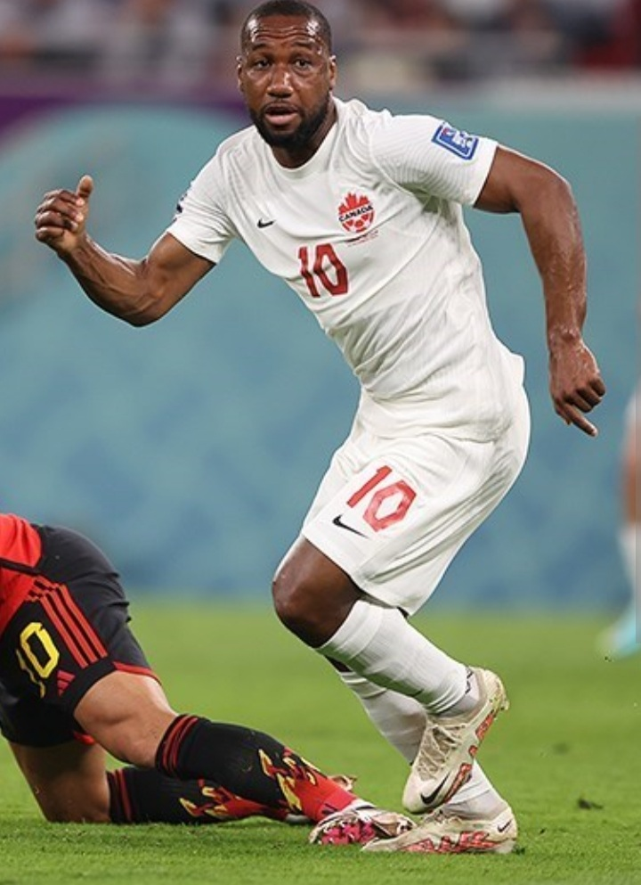 |
| Theo Corbeanu | Delantero / Extremo | 22 |
Theo Corbeanu, nacido en 2002, es un joven delantero con gran técnica. Juega en el Grasshoppers de Suiza y es considerado una promesa del fútbol canadiense. |
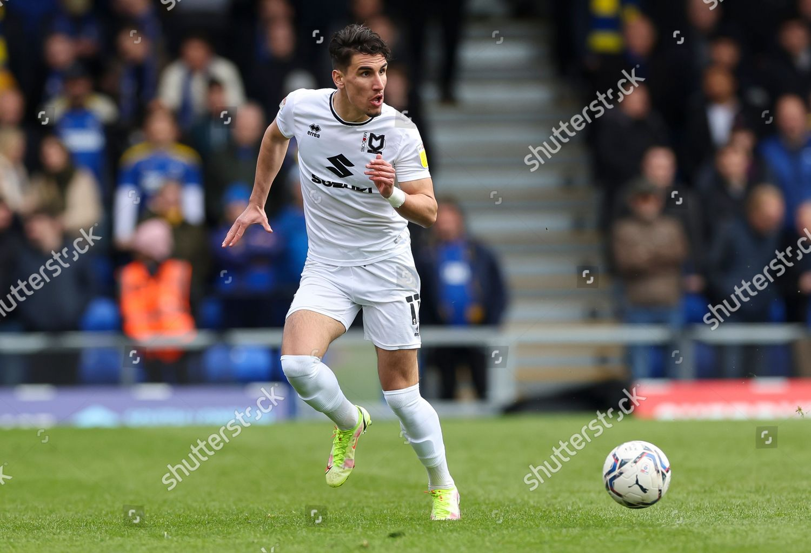 |
| Jonathan Osorio | Mediocampista | 33 |
Jonathan Osorio, nacido en 1992, es un mediocampista creativo y líder en Toronto FC. Es uno de los jugadores más experimentados de la selección. |
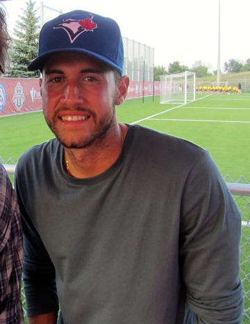 |
| Derek Cornelius | Defensa central | 27 |
Derek Cornelius, nacido en 1997, es un defensa fuerte y confiable. Juega en el Malmö FF de Suecia. |
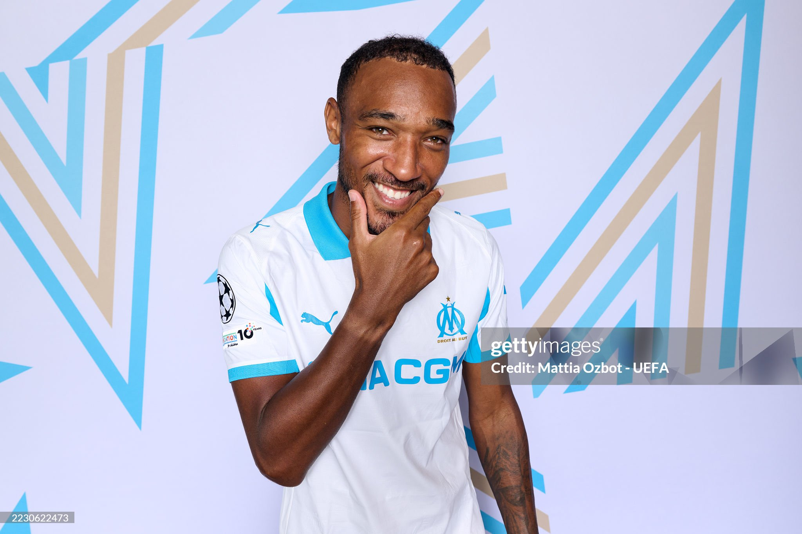 |
| Kamal Miller | Defensa central | 28 |
Kamal Miller, nacido en 1997, es un central rápido y sólido. Actualmente juega en el Inter Miami de la MLS. |
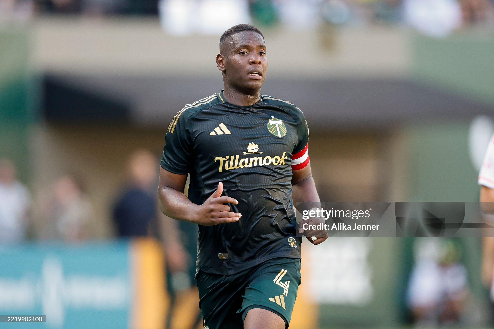 |
| Milan Borjan | Portero | 37 |
Milan Borjan, nacido en 1987, es un arquero veterano de la selección canadiense. Figura histórica, jugó en el Estrella Roja de Belgrado. |
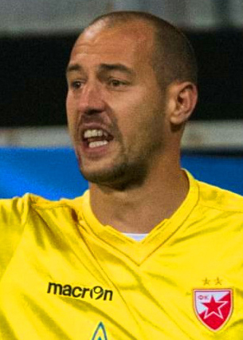 |
| Ismaël Koné | Mediocampista | 23 |
Ismaël Koné, nacido en 2002, es un mediocampista con gran despliegue físico. Actualmente juega en el Watford de Inglaterra. |
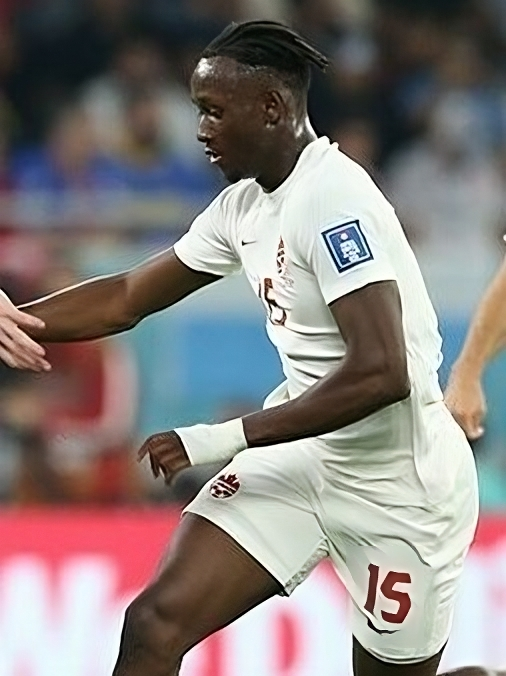 |
| Stephen Eustaquio | Mediocampista | 28 |
Stephen Eustaquio, nacido en 1997, es un mediocampista con gran visión de juego. Se desempeña en el FC Porto de Portugal. |
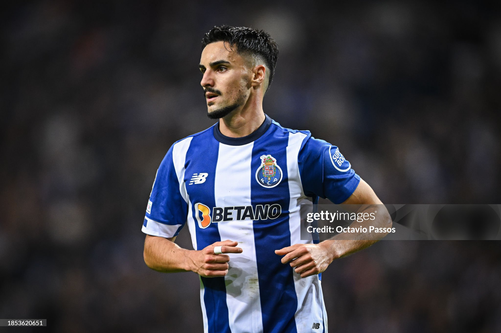 |
| Tajon Buchanan | Extremo | 26 |
Tajon Buchanan, nacido en 1999, es un extremo veloz y habilidoso. Actualmente juega en el Inter de Milán. |
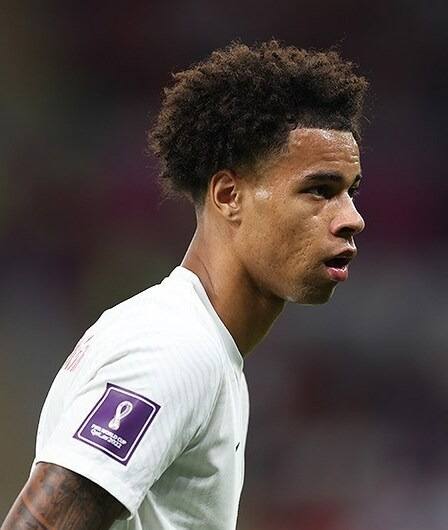 |
| Cyle Larin | Delantero | 30 |
Cyle Larin, nacido en 1995, es un delantero potente y goleador. Actualmente juega en el Mallorca de España. |
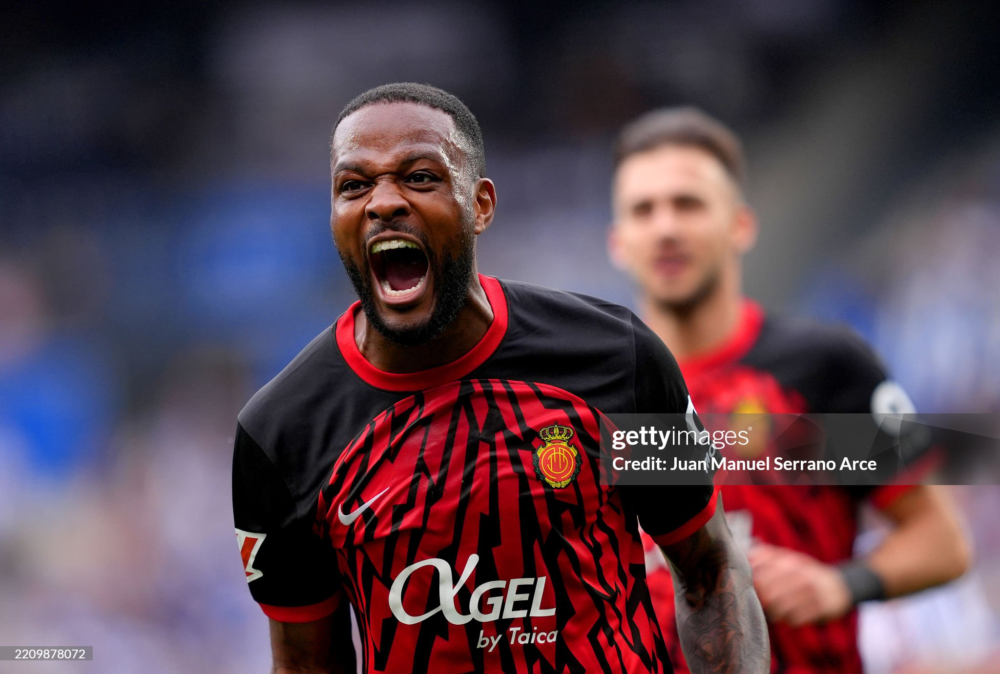 |
| Alphonso Davies | Lateral / Extremo | 24 |
Alphonso Davies, nacido en 2000, es la gran estrella del fútbol canadiense. Juega en el Bayern Múnich y es considerado uno de los mejores laterales del mundo. |
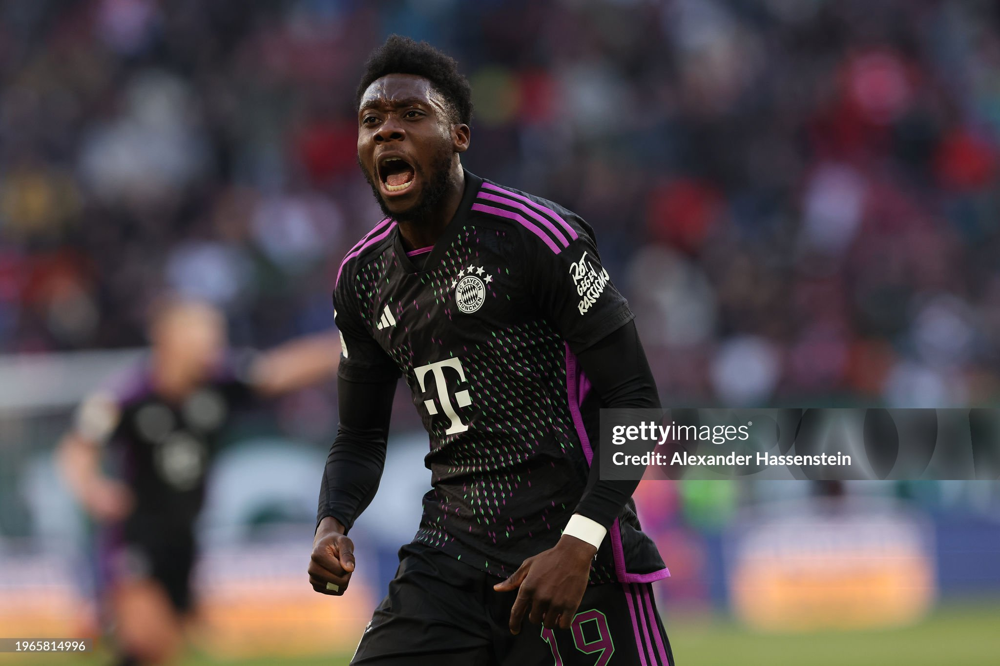 |
| Jonathan David | Delantero | 25 |
Jonathan David, nacido en 2000, es el máximo referente goleador de Canadá. Juega en el Lille de Francia y es figura en la Ligue 1. |
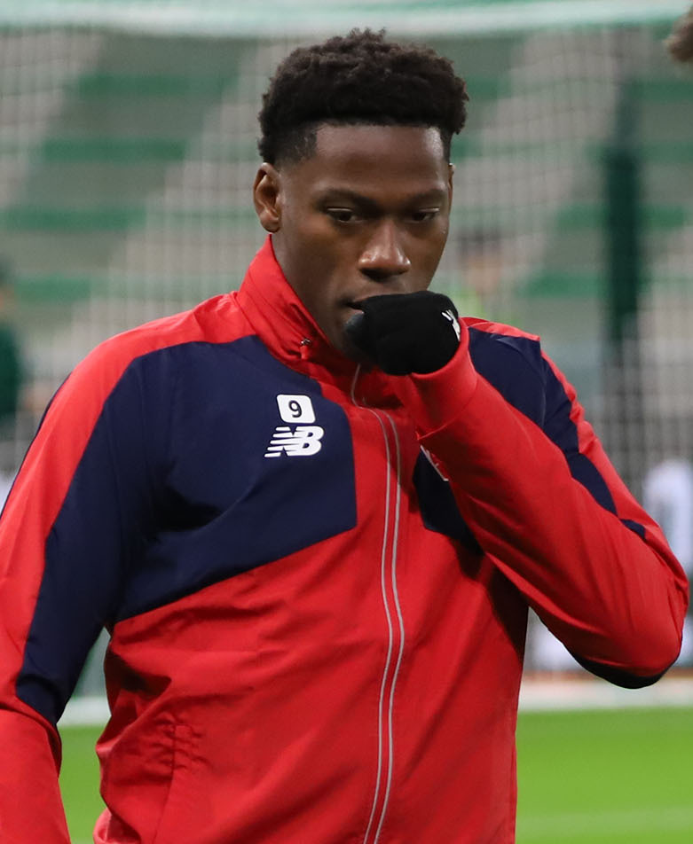 |